LebNet Tech Fellows — Background Notes
These notes collect the mathematical background assumed throughout the course. Nothing here is derived during lectures; if any section feels genuinely unfamiliar rather than rusty, treat it as a reading assignment before the corresponding lecture.
A function $f : \mathbb{R} \to \mathbb{R}$ assigns to each input $x$ an output $f(x)$. The derivative $f'(x)$ is the instantaneous rate of change of $f$ at $x$. To make this precise, fix a point $x$ and consider a nearby point $x + h$: the ratio $$\frac{f(x+h) - f(x)}{h}$$ is the average rate of change over the interval $[x, x+h]$, geometrically the slope of the secant line through $(x, f(x))$ and $(x+h, f(x+h))$. The derivative is the limit of this slope as $h$ shrinks to zero: $$f'(x) = \lim_{h \to 0} \frac{f(x+h) - f(x)}{h}$$
As $h \to 0$, the secant line rotates into the tangent line at $x$; the derivative is the slope of that tangent. The left panel shows the secant through two distinct points $(x, f(x))$ and $(x+h, f(x+h))$; the right panel shows the tangent as those two points merge ($h \to 0$).
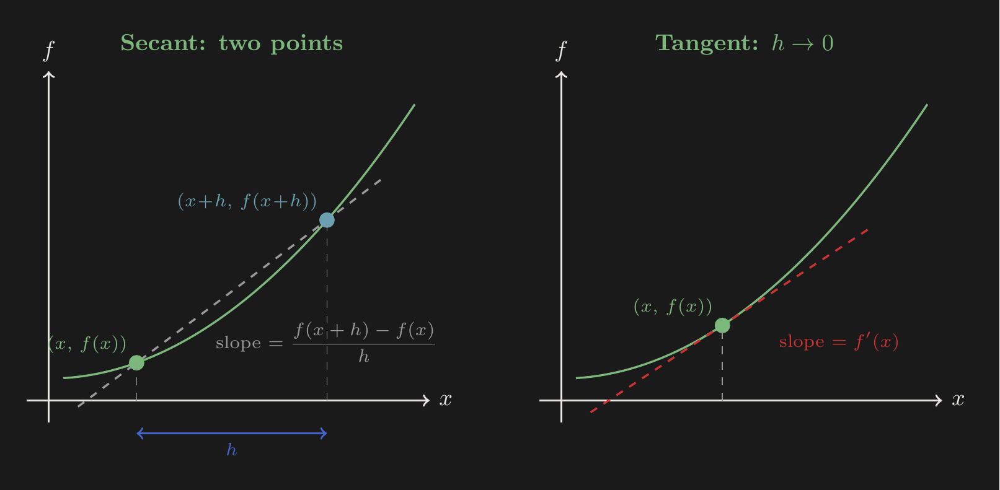
Left: secant line through two points separated by $h$. Right: as $h \to 0$, the secant converges to the tangent — the derivative.
Standard rules. For differentiable $f, g$ and constant $c$:
The chain rule is the single most important differentiation rule in the course: backpropagation in neural networks is nothing more than the chain rule applied to a composition of many functions.
Given a function $f$, the integral $\int_a^b f(x)\,dx$ is the signed area between $f$ and the $x$-axis on $[a, b]$: the total quantity $f$ accumulates over the interval. To compute it, partition $[a, b]$ into $n$ subintervals of width $\Delta x = (b - a)/n$, approximate the area in each slice by a rectangle of height $f(x_i^*)$ and width $\Delta x$, and sum: $$S_n = \sum_{i=1}^{n} f(x_i^*)\,\Delta x$$
As $n$ grows, $\Delta x$ shrinks, the rectangles trace $f$ more faithfully, and the error vanishes. The three panels below show this convergence for $n = 3$, $8$, $30$.
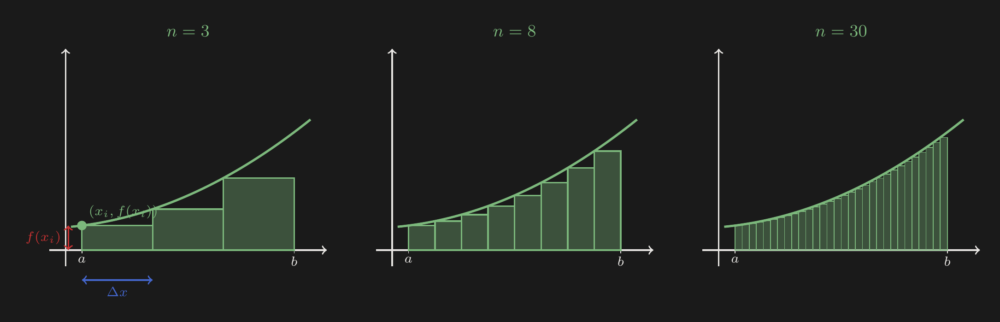
Riemann sums for increasing $n$. Each rectangle has width $\Delta x$ and height $f(x_i)$; their total area converges to $\int_a^b f(x)\,dx$.
The Fundamental Theorem of Calculus connects differentiation and integration: if $F'(x) = f(x)$, then $\int_a^b f(x)\,dx = F(b) - F(a)$. They are inverse operations; this duality appears throughout the course, most directly in the relationship between the probability density function and the cumulative distribution function.
For $f : \mathbb{R}^d \to \mathbb{R}$, the partial derivative $\frac{\partial f}{\partial x_j}$ measures the rate of change of $f$ along the $j$-th coordinate axis while all other coordinates are held fixed. The gradient $$\nabla f(\mathbf{x}) = \begin{bmatrix} \frac{\partial f}{\partial x_1} \\ \vdots \\ \frac{\partial f}{\partial x_d} \end{bmatrix} \in \mathbb{R}^d$$ collects all $d$ partial derivatives into a single vector. Geometrically, $\nabla f(\mathbf{x})$ points in the direction of steepest ascent of $f$ at $\mathbf{x}$, and its magnitude $\|\nabla f\|$ is the rate of increase in that direction. The left panel below shows a 3D surface $f(x_1, x_2) = x_1^2 + 2x_2^2$ sliced at $x_2 = 1$: the partial derivative $\partial f / \partial x_1$ is the slope of the curve in that slice (the tangent line). The right panel extracts the 1D slice.
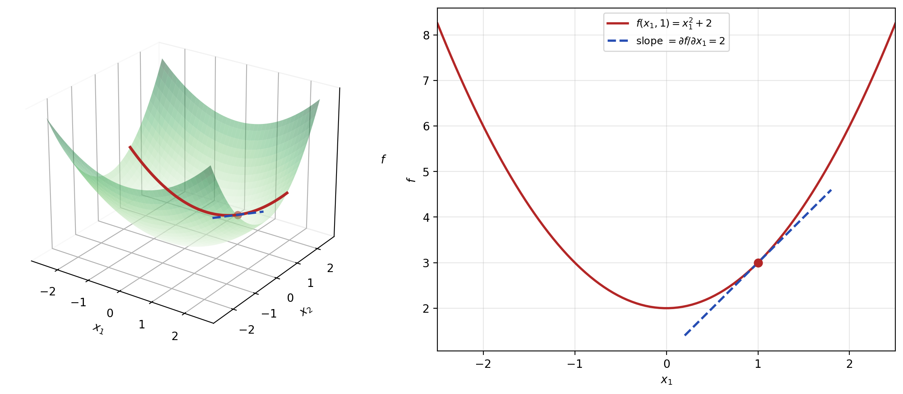
Left: the 3D surface sliced along $x_2 = 1$ (red curve). Right: the 1D slice with slope = $\partial f/\partial x_1 = 2x_1$ at $x_1 = 1$.
On a contour plot (curves of constant $f$), the gradient at each point is perpendicular to the level curve passing through that point. The figure below shows gradient arrows on the contour plot of $f(x_1, x_2) = x_1^2 + 2x_2^2$, cutting across contour lines at right angles.
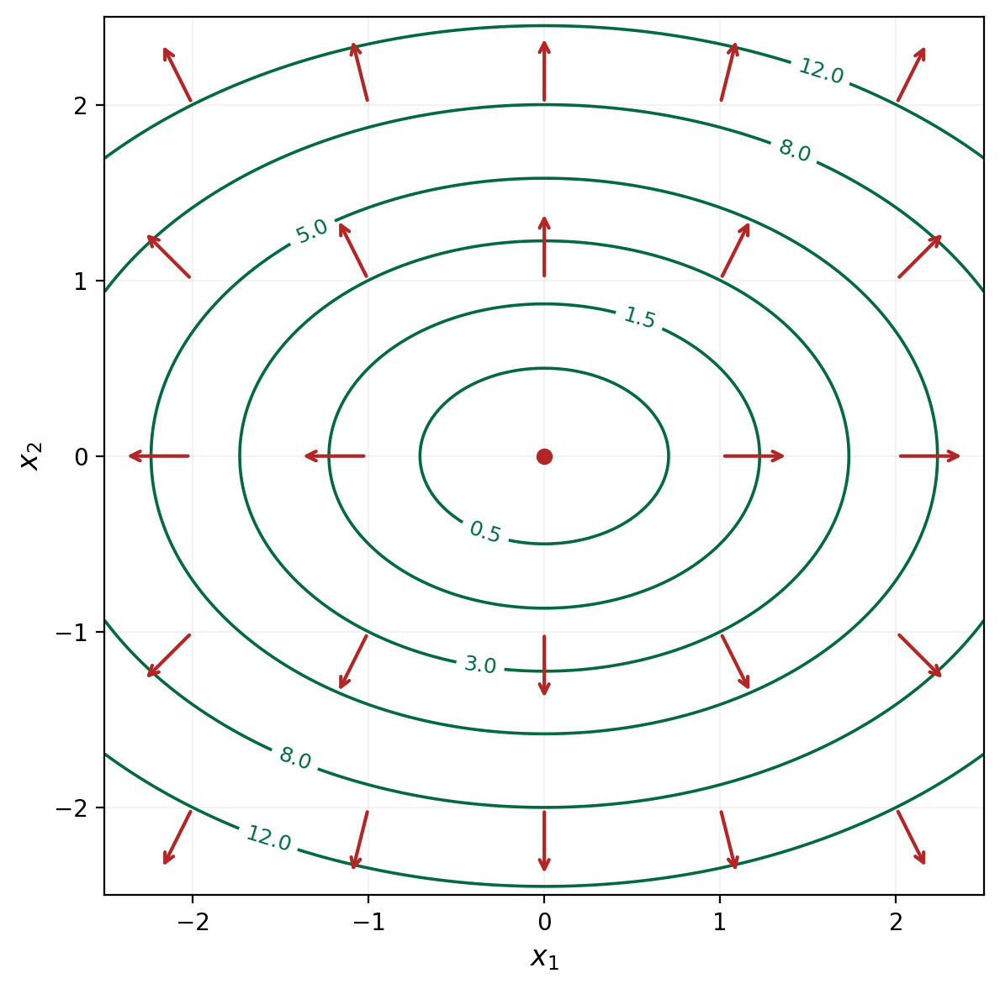
Gradient field on a contour plot: each arrow is perpendicular to the level curve through that point, pointing toward steepest ascent.
Gradient descent exploits this directly: stepping in the direction $-\nabla f$ decreases $f$ as rapidly as possible per unit step.
A necessary condition for $\mathbf{x}^*$ to be a local minimum of a differentiable $f : \mathbb{R}^d \to \mathbb{R}$ is $\nabla f(\mathbf{x}^*) = \mathbf{0}$ (the first-order condition). This is necessary but not sufficient: saddle points also satisfy it. To classify critical points, we examine the Hessian, the $d \times d$ matrix of second partial derivatives: $$\mathbf{H}_f(\mathbf{x}) = \left[\frac{\partial^2 f}{\partial x_i \partial x_j}\right]_{i,j}$$
At a critical point $\nabla f(\mathbf{x}^*) = \mathbf{0}$: if $\mathbf{H}_f(\mathbf{x}^*)$ is positive definite (all eigenvalues positive), then $\mathbf{x}^*$ is a local minimum; if negative definite, a local maximum; otherwise, a saddle point.
Convexity is the reason linear regression has a unique, closed-form solution while neural network training does not: the squared-error loss is convex in the parameters of a linear model but non-convex in the parameters of a neural network.
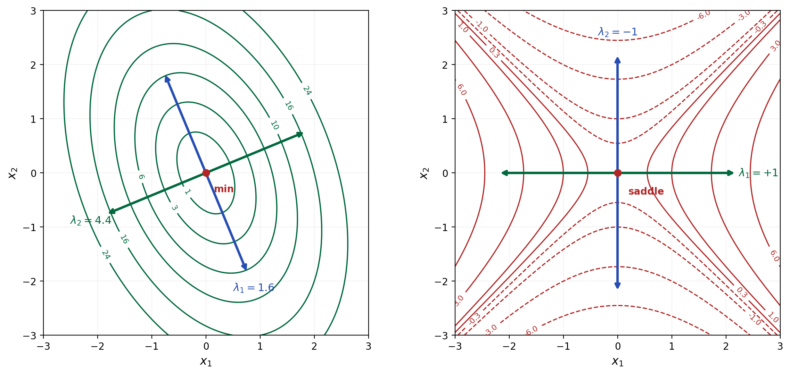
Left: $\mathbf{H} \succ 0$ (both $\lambda > 0$) — contours are ellipses, curvature is positive along every eigenvector direction, giving a bowl with a unique minimum. Right: indefinite $\mathbf{H}$ ($\lambda_1 > 0,\, \lambda_2 < 0$) — the positive-eigenvalue direction curves up, the negative-eigenvalue direction curves down, giving a saddle.
A matrix $\mathbf{A} \in \mathbb{R}^{m \times n}$ defines a linear function $f : \mathbb{R}^n \to \mathbb{R}^m$ by $f(\mathbf{x}) = \mathbf{A}\mathbf{x}$. What this function does is determined by the columns of $\mathbf{A}$: the $j$-th column is the image of the $j$-th standard basis vector $\mathbf{e}_j$: $$\mathbf{A}\mathbf{e}_j = \begin{bmatrix} a_{1j} \\ a_{2j} \\ \vdots \\ a_{mj}\end{bmatrix} = \text{($j$-th column of $\mathbf{A}$)}$$
Any vector $\mathbf{x} \in \mathbb{R}^n$ decomposes as $\mathbf{x} = x_1\mathbf{e}_1 + \cdots + x_n\mathbf{e}_n$; by linearity, $$\mathbf{A}\mathbf{x} = x_1\,(\mathbf{A}\mathbf{e}_1) + x_2\,(\mathbf{A}\mathbf{e}_2) + \cdots + x_n\,(\mathbf{A}\mathbf{e}_n)$$ The output is a linear combination of the columns of $\mathbf{A}$, weighted by the entries of $\mathbf{x}$. Once you know where each basis vector lands, you know where every vector lands.
A concrete example: let $\mathbf{A} = \begin{bmatrix} 2 & -1 \\ 0 & 1\end{bmatrix}$ and $\mathbf{x} = \begin{bmatrix}1 \\ 2\end{bmatrix}$. The first column $\begin{bmatrix}2\\0\end{bmatrix}$ tells us $\mathbf{e}_1$ gets stretched horizontally by 2; the second column $\begin{bmatrix}-1\\1\end{bmatrix}$ tells us $\mathbf{e}_2$ gets sheared left. The output $\mathbf{A}\mathbf{x} = \begin{bmatrix}0\\2\end{bmatrix}$ is the weighted combination of these images.
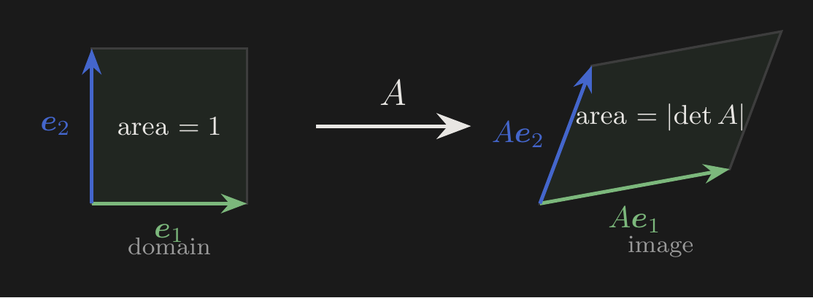
The unit square (spanned by $\mathbf{e}_1, \mathbf{e}_2$) maps to the parallelogram spanned by the columns of $\mathbf{A}$. Area scales by $|\det \mathbf{A}|$.
Geometrically, a linear transformation can scale, rotate, reflect, shear, and project, but it cannot bend, twist, or warp.
Diagonal matrices scale each coordinate axis independently: $\begin{bmatrix}\alpha_1 & 0 \\ 0 & \alpha_2\end{bmatrix}$ sends $\mathbf{e}_1 \mapsto \alpha_1\mathbf{e}_1$ and $\mathbf{e}_2 \mapsto \alpha_2\mathbf{e}_2$. A negative $\alpha_j$ reflects across that axis.
Shear matrices have off-diagonal entries that make one coordinate's image depend on another. The matrix $\begin{bmatrix}1 & \beta \\ 0 & 1\end{bmatrix}$ leaves $\mathbf{e}_1$ fixed but pushes $\mathbf{e}_2$ sideways by $\beta$, tilting the unit square into a parallelogram.
Rotation matrices $\mathbf{R}_\theta = \begin{bmatrix}\cos\theta & -\sin\theta \\ \sin\theta & \cos\theta\end{bmatrix}$ rotate every vector by angle $\theta$ counterclockwise; they preserve all lengths and angles.
Any $m \times n$ matrix can be decomposed (via the SVD) as a rotation, followed by a diagonal scaling, followed by another rotation. Every linear transformation reduces to rotations and axis-aligned stretches.
Matrix multiplication corresponds to function composition: if $\mathbf{B}$ maps $\mathbb{R}^p \to \mathbb{R}^n$ and $\mathbf{A}$ maps $\mathbb{R}^n \to \mathbb{R}^m$, then $\mathbf{A}\mathbf{B}$ maps $\mathbb{R}^p \to \mathbb{R}^m$ by first applying $\mathbf{B}$, then $\mathbf{A}$.
Matrix multiplication is generally not commutative: $\mathbf{A}\mathbf{B} \neq \mathbf{B}\mathbf{A}$. Applying a shear $\mathbf{S}$ then a rotation $\mathbf{R}$ ($\mathbf{RS}$) produces a different shape than rotating first then shearing ($\mathbf{SR}$), because each transformation acts relative to the axes as they exist after the previous one. Commutativity holds only in special cases (e.g., both matrices diagonal).
The dot product of $\mathbf{x}, \mathbf{y} \in \mathbb{R}^d$ admits two equivalent definitions: $$\mathbf{x}^\top\mathbf{y} = \sum_{i=1}^{d} x_i y_i = \|\mathbf{x}\|\,\|\mathbf{y}\|\cos\theta$$ where $\theta$ is the angle between the two vectors. Project $\mathbf{x}$ onto the line spanned by $\mathbf{y}$: the dot product equals this projection length times $\|\mathbf{y}\|$. Three cases:
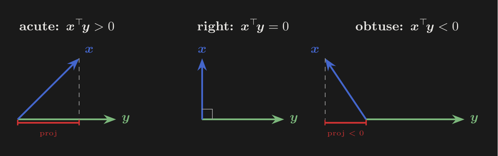
The dot product's sign equals the sign of the projection of $\mathbf{x}$ onto $\mathbf{y}$: positive when the angle is acute, zero when orthogonal, negative when obtuse.
For a PSD matrix $\mathbf{A}$, the condition $\mathbf{v}^\top\mathbf{A}\mathbf{v} \geq 0$ means the angle between $\mathbf{v}$ and $\mathbf{A}\mathbf{v}$ is never obtuse.
A norm $\|\mathbf{x}\|$ assigns a notion of "size" to each vector. The Euclidean ($\ell_2$) norm $\|\mathbf{x}\|_2 = \sqrt{x_1^2 + \cdots + x_d^2}$ measures straight-line length. The $\ell_1$ norm $\|\mathbf{x}\|_1 = |x_1| + \cdots + |x_d|$ sums absolute values. The difference is visible in their unit balls — the set of all $\mathbf{x}$ with $\|\mathbf{x}\| \leq 1$:
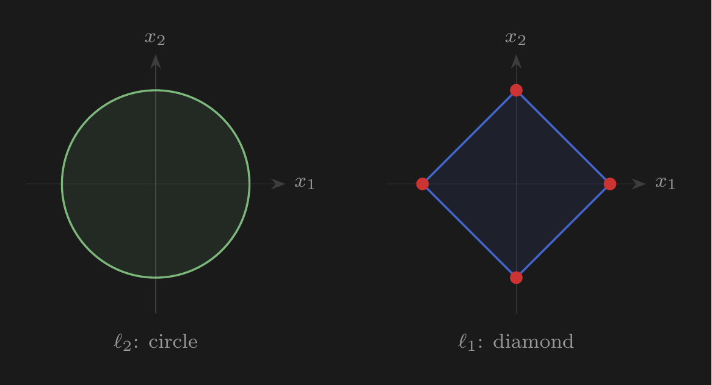
The $\ell_1$ ball has corners on the coordinate axes (red). Regularization constraints force the solution onto the boundary; $\ell_1$'s corners produce sparse solutions, $\ell_2$'s smooth boundary does not.
Rank and the null space. The rank of $\mathbf{A} \in \mathbb{R}^{m \times n}$ is the dimension of its image: the set of all outputs $\{\mathbf{A}\mathbf{x} : \mathbf{x} \in \mathbb{R}^n\}$. Equivalently, it counts how many columns of $\mathbf{A}$ are linearly independent. When $\text{rank}(\mathbf{A}) = r < n$, the transformation collapses an $n$-dimensional input space onto an $r$-dimensional subspace; some directions in the input are completely lost.
The directions that are lost form the null space $\ker(\mathbf{A}) = \{\mathbf{x} : \mathbf{A}\mathbf{x} = \mathbf{0}\}$. Its dimension is $n - r$. A rank-deficient transformation sends multiple distinct inputs to the same output, so it cannot be inverted; the information along the null space is lost.
Determinant. The determinant of a transformation is the factor by which it scales areas (in 2D) or volumes (in higher dimensions). For $\mathbf{A} = \begin{bmatrix} a_1 & b_1 \\ a_2 & b_2 \end{bmatrix}$ with columns $\mathbf{a}$ and $\mathbf{b}$, the unit square maps to the parallelogram spanned by $\mathbf{a}$ and $\mathbf{b}$. Its area is base $\|\mathbf{a}\|$ times height $\|\mathbf{b}\|\sin\theta$: $$\text{area} = a_1 b_2 - a_2 b_1 = \det(\mathbf{A})$$
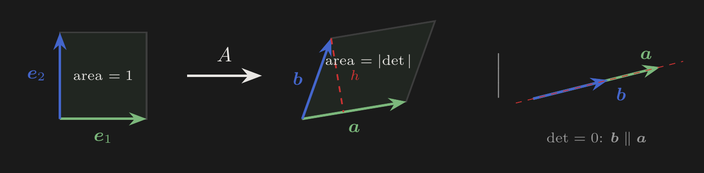
Left: unit square maps to a parallelogram; its area equals $|\det \mathbf{A}|$. Right: when $\det = 0$, the columns are parallel and the parallelogram collapses to a line.
When $\det(\mathbf{A}) > 0$, orientation is preserved; when $\det(\mathbf{A}) < 0$, orientation is flipped. The determinant is multiplicative: $\det(\mathbf{A}\mathbf{B}) = \det(\mathbf{A})\det(\mathbf{B})$, and equals the product of eigenvalues: $\det(\mathbf{A}) = \prod_j \lambda_j$.
Invertibility. A square matrix $\mathbf{A}$ is invertible if and only if $\det(\mathbf{A}) \neq 0$, equivalently $\text{rank}(\mathbf{A}) = d$, equivalently $\ker(\mathbf{A}) = \{\mathbf{0}\}$. The inverse $\mathbf{A}^{-1}$ satisfies $\mathbf{A}\mathbf{A}^{-1} = \mathbf{I}_d$. Key identity: $(\mathbf{A}\mathbf{B})^{-1} = \mathbf{B}^{-1}\mathbf{A}^{-1}$.
In linear regression, $\mathbf{X}^\top\mathbf{X}$ must be invertible for a unique OLS solution, which requires $\text{rank}(\mathbf{X}) = d$ and hence $n \geq d$.
A square matrix $\mathbf{Q} \in \mathbb{R}^{d \times d}$ is orthogonal if $\mathbf{Q}^\top\mathbf{Q} = \mathbf{Q}\mathbf{Q}^\top = \mathbf{I}$ (so $\mathbf{Q}^{-1} = \mathbf{Q}^\top$). The $(i,j)$ entry of $\mathbf{Q}^\top\mathbf{Q}$ is $\mathbf{q}_i^\top\mathbf{q}_j$, which must be $1$ when $i=j$ and $0$ otherwise: the columns are mutually orthogonal unit vectors. Three geometric properties follow from $\mathbf{Q}^\top\mathbf{Q} = \mathbf{I}$:
An orthogonal matrix can rotate and reflect but cannot stretch, compress, or shear. Orthogonal matrices appear in the eigendecomposition $\mathbf{A} = \mathbf{Q}\boldsymbol{\Lambda}\mathbf{Q}^\top$ of a symmetric matrix: rotate axes to align with eigenvectors, scale each axis by its eigenvalue, rotate back.
A symmetric matrix $\mathbf{A} \in \mathbb{R}^{d \times d}$ is positive definite ($\mathbf{A} \succ 0$) if $\mathbf{v}^\top\mathbf{A}\mathbf{v} > 0$ for all $\mathbf{v} \neq \mathbf{0}$, and positive semi-definite ($\mathbf{A} \succeq 0$) if $\mathbf{v}^\top\mathbf{A}\mathbf{v} \geq 0$.
The quantity $\mathbf{v}^\top(\mathbf{A}\mathbf{v})$ is the dot product of $\mathbf{v}$ with its image $\mathbf{A}\mathbf{v}$. The condition $\mathbf{v}^\top\mathbf{A}\mathbf{v} > 0$ says exactly that the angle between $\mathbf{v}$ and $\mathbf{A}\mathbf{v}$ is always acute: a positive definite matrix never sends a vector past $90°$ from where it started.
Eigenvalues. Since $\mathbf{A}\mathbf{v}_j = \lambda_j\mathbf{v}_j$, a negative eigenvalue reverses an eigenvector past $90°$, so positive definiteness requires all eigenvalues strictly positive. The determinant $\det(\mathbf{A}) = \prod_j\lambda_j \geq 0$ for PSD matrices.
Decomposition. A symmetric PSD matrix admits $\mathbf{A} = \mathbf{B}^\top\mathbf{B}$ (proved by $\mathbf{v}^\top\mathbf{B}^\top\mathbf{B}\mathbf{v} = \|\mathbf{B}\mathbf{v}\|^2 \geq 0$). The Cholesky factorization $\mathbf{A} = \mathbf{L}\mathbf{L}^\top$ is the computationally preferred variant.
Why PSD guarantees a unique minimum. For $f(\mathbf{x}) = \frac{1}{2}\mathbf{x}^\top\mathbf{A}\mathbf{x} - \mathbf{b}^\top\mathbf{x}$, perturbing the critical point $\mathbf{x}^*$ by $\mathbf{e} \neq \mathbf{0}$ gives: $$f(\mathbf{x}^* + \mathbf{e}) = f(\mathbf{x}^*) + \tfrac{1}{2}\,\mathbf{e}^\top\mathbf{A}\,\mathbf{e}$$ When $\mathbf{A} \succ 0$, the term $\mathbf{e}^\top\mathbf{A}\mathbf{e} > 0$ for all $\mathbf{e} \neq \mathbf{0}$: every direction away from $\mathbf{x}^*$ increases the objective. When $\mathbf{A}$ is indefinite, some eigenvalues are negative, so there exist directions that decrease the objective: the critical point is a saddle.
The PSD cone. A $2 \times 2$ symmetric matrix $\begin{bmatrix}a & c \\ c & b\end{bmatrix}$ is described by three numbers $(a, b, c)$. The PSD conditions $a \geq 0$, $b \geq 0$, and $ab - c^2 \geq 0$ define a region in $\mathbb{R}^3$ that is literally a cone: at "height" $a = b = k$, the allowed off-diagonal values satisfy $|c| \leq k$, so the cross-section is an interval $[-k, k]$ widening linearly as $k$ grows. The set is closed under nonnegative linear combinations (convex cone): $\mathbf{v}^\top(\alpha\mathbf{A} + \beta\mathbf{B})\mathbf{v} = \alpha\,\mathbf{v}^\top\!\mathbf{A}\mathbf{v} + \beta\,\mathbf{v}^\top\!\mathbf{B}\mathbf{v} \geq 0$ for $\alpha, \beta \geq 0$ and $\mathbf{A}, \mathbf{B} \succeq 0$.
The Hessian of the OLS objective is $\frac{2}{n}\mathbf{X}^\top\mathbf{X}$, which is PSD since $\mathbf{v}^\top\mathbf{X}^\top\mathbf{X}\mathbf{v} = \|\mathbf{X}\mathbf{v}\|^2 \geq 0$, and strictly PD when $\mathbf{X}$ has full column rank. The OLS loss surface is therefore a bowl with a unique global minimum.
Given a subspace $V \subset \mathbb{R}^n$ and a vector $\mathbf{y}$, the orthogonal projection of $\mathbf{y}$ onto $V$ is the unique point $\hat{\mathbf{y}} \in V$ closest to $\mathbf{y}$ in Euclidean distance. The residual $\mathbf{y} - \hat{\mathbf{y}}$ is perpendicular to every vector in $V$.
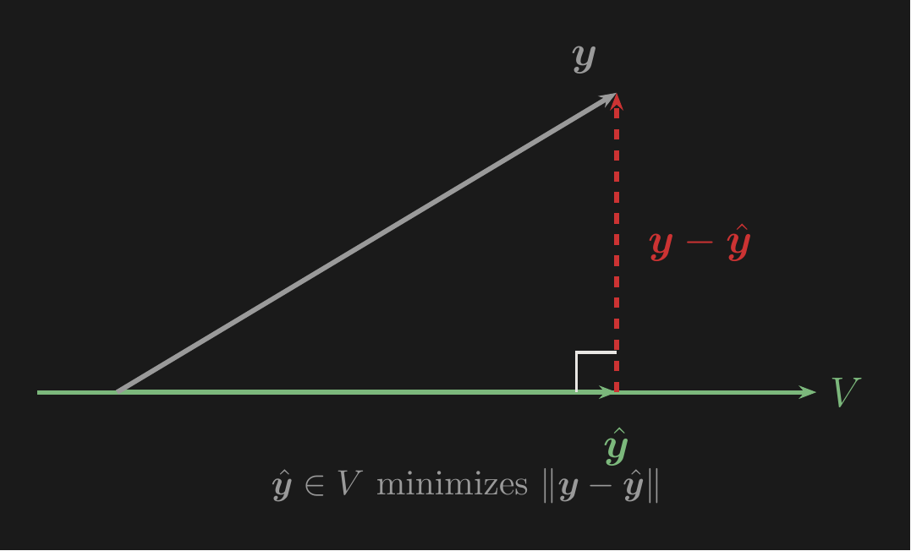
The shortest path from $\mathbf{y}$ to the subspace $V$ always hits $V$ at a right angle. Any other path adds a component along $V$ that only increases the distance.
OLS does exactly this. The fitted values $\hat{\mathbf{y}} = \mathbf{X}\hat{\boldsymbol{\theta}}$ are the orthogonal projection of the observed $\mathbf{y}$ onto the column space of $\mathbf{X}$; the normal equations $\mathbf{X}^\top(\mathbf{y} - \mathbf{X}\hat{\boldsymbol{\theta}}) = \mathbf{0}$ state that the residual is perpendicular to every column of $\mathbf{X}$.
In a finite sample space $\Omega$ with equally likely outcomes, the probability of an event $A$ is the ratio $P(A) = |A|/|\Omega|$: count favorable outcomes and divide by the total.
In the continuous case, this counting approach breaks down. If $X$ takes values in $\mathbb{R}$, then $P(X = x) = 0$ for every single $x$: uncountably many points must share a total probability of 1, and no individual point can carry positive mass. We replace counting with density. A probability density function (PDF) $f : \mathbb{R} \to [0, \infty)$ assigns to each point $x$ a probability per unit length, such that $$P(a \leq X \leq b) = \int_a^b f(x)\,dx$$
The transition from discrete to continuous is precisely the transition from sums to integrals, from mass functions to density functions. The quantity $f(x)\,dx$ is the probability in an infinitesimal slice $[x, x + dx]$: chop the region into thin slices, assign each a probability proportional to the local density $f(x)$, and sum. Note that $f(x)$ itself is not a probability and can exceed 1; what must equal 1 is the total integral: $\int_{-\infty}^{\infty} f(x)\,dx = 1$.
The cumulative distribution function (CDF) $F(x) = P(X \leq x) = \int_{-\infty}^{x} f(t)\,dt$ accumulates density from the left. It is nondecreasing, with $F(-\infty) = 0$ and $F(\infty) = 1$. Differentiation inverts integration: $f(x) = F'(x)$. The PDF is the derivative of the CDF; the CDF is the integral of the PDF.
The expectation of $X$ is its density-weighted average: $$\mathbb{E}[X] = \begin{cases} \sum_x x\, p(x) & \text{(discrete)} \\ \int_{-\infty}^{\infty} x\, f(x)\,dx & \text{(continuous)} \end{cases}$$ Linearity of expectation: $\mathbb{E}[aX + bY] = a\mathbb{E}[X] + b\mathbb{E}[Y]$, regardless of whether $X$ and $Y$ are independent.
The variance $\text{Var}(X) = \mathbb{E}[(X - \mathbb{E}[X])^2] = \mathbb{E}[X^2] - (\mathbb{E}[X])^2$ measures dispersion around the mean. Properties:
The covariance $\text{Cov}(X, Y) = \mathbb{E}[(X - \mathbb{E}[X])(Y - \mathbb{E}[Y])] = \mathbb{E}[XY] - \mathbb{E}[X]\mathbb{E}[Y]$ measures linear association. The correlation $\rho_{X,Y} = \text{Cov}(X, Y) / (\sigma_X\,\sigma_Y) \in [-1, 1]$ is the scale-free version. When $\rho = 0$, the scatter cloud is circular; as $|\rho| \to 1$, it elongates into a diagonal ellipse.
Correlation as cosine of angle. Center both variables: $\tilde{x}_i = x_i - \bar{x}$, $\tilde{y}_i = y_i - \bar{y}$. Treat $\tilde{\mathbf{x}}, \tilde{\mathbf{y}} \in \mathbb{R}^n$ as vectors. The sample correlation is $$r = \frac{\tilde{\mathbf{x}} \cdot \tilde{\mathbf{y}}}{\|\tilde{\mathbf{x}}\|\;\|\tilde{\mathbf{y}}\|} = \cos\theta$$ where $\theta$ is the angle between the centered data vectors. Parallel vectors give $r = 1$; orthogonal vectors give $r = 0$; antiparallel give $r = -1$. The coefficient of determination $R^2 = \cos^2\theta$ is the fraction of variance explained.
$\text{Cov}(X, Y) = 0$ does not imply independence. Independence implies zero covariance, but correlation measures only linear dependence.
The covariance matrix. For a random vector $\mathbf{X} \in \mathbb{R}^d$: $$\boldsymbol{\Sigma} = \mathbb{E}[(\mathbf{X} - \mathbb{E}[\mathbf{X}])(\mathbf{X} - \mathbb{E}[\mathbf{X}])^\top] \in \mathbb{R}^{d \times d}$$ Diagonal entries $\Sigma_{ii} = \sigma_i^2$ are marginal variances; off-diagonal $\Sigma_{ij} = \rho_{ij}\sigma_i\sigma_j$ are pairwise covariances. The covariance matrix is always PSD, since for any $\mathbf{v}$: $$\mathbf{v}^\top\boldsymbol{\Sigma}\mathbf{v} = \mathbb{E}\!\left[(\mathbf{v}^\top(\mathbf{X} - \boldsymbol{\mu}))^2\right] \geq 0$$ Variance properties lift to matrices: $\text{Var}(\mathbf{A}\mathbf{X}) = \mathbf{A}\boldsymbol{\Sigma}\mathbf{A}^\top$, analogous to $\text{Var}(aX) = a^2\sigma^2$.
Cholesky and whitening. The Cholesky factorization $\boldsymbol{\Sigma} = \mathbf{L}\mathbf{L}^\top$ is the multivariate square root. The whitening transformation $\mathbf{Z} = \mathbf{L}^{-1}(\mathbf{X} - \boldsymbol{\mu})$ produces components with identity covariance. The Mahalanobis distance $(\mathbf{x} - \boldsymbol{\mu})^\top\boldsymbol{\Sigma}^{-1}(\mathbf{x} - \boldsymbol{\mu})$ is a multivariate squared $z$-score, and is exactly the exponent in the multivariate Gaussian density.
Random variables $X$ and $Y$ are independent if $P(X \in A, Y \in B) = P(X \in A)\,P(Y \in B)$ for all sets $A, B$. A sequence $X_1, \ldots, X_n$ is i.i.d. if the $X_i$ are mutually independent and share the same distribution; this is the standing assumption for training data throughout the course.
The conditional expectation $\mathbb{E}[Y \mid X = x]$ is the expected value of $Y$ given $X = x$. Key formulas:
The conditional expectation $\mathbb{E}[Y \mid X]$ is the best predictor of $Y$ from $X$ under squared loss.
The distributions used in the course are connected by summation and limiting operations.
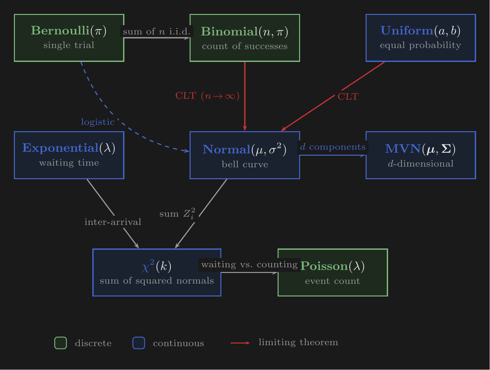
Distribution relationships used in the course. Green = discrete; blue = continuous. Red arrows = Central Limit Theorem convergence.
Bernoulli$(\pi)$: models a binary outcome, $P(X = 1) = \pi$, $P(X = 0) = 1 - \pi$, with $\mathbb{E}[X] = \pi$ and $\text{Var}(X) = \pi(1 - \pi)$. The building block for logistic regression.
Gaussian (Normal) $\mathcal{N}(\mu, \sigma^2)$: the bell curve. Its density is $$f(x) = \frac{1}{\sqrt{2\pi\sigma^2}}\exp\!\left(-\frac{(x - \mu)^2}{2\sigma^2}\right)$$ with $\mathbb{E}[X] = \mu$, $\text{Var}(X) = \sigma^2$. Minimizing squared error and maximizing the Gaussian log-likelihood are the same problem. Linear combinations of independent Gaussians are Gaussian.
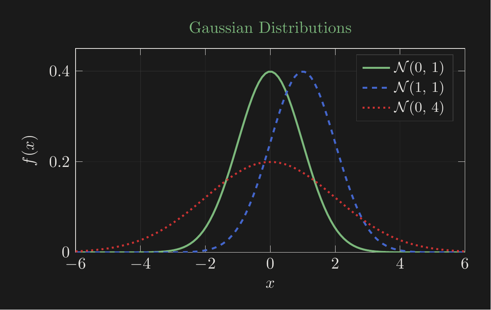
Three Gaussian densities: shifting $\mu$ translates the bell; increasing $\sigma^2$ flattens and widens it.
De Moivre–Laplace theorem. The sum of $n$ i.i.d. Bernoulli$(\pi)$ variables is Binomial$(n, \pi)$. As $n$ grows, the standardized Binomial converges to the standard Normal: $$\frac{X - n\pi}{\sqrt{n\pi(1-\pi)}} \xrightarrow{d} \mathcal{N}(0, 1)$$
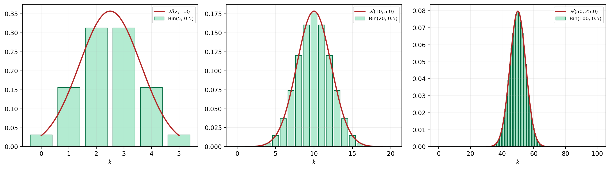
$\text{Bin}(n, 0.5)$ (bars) vs. $\mathcal{N}(n/2,\; n/4)$ (curve) for $n = 5, 20, 100$. The discrete histogram becomes indistinguishable from the Normal by $n=100$.
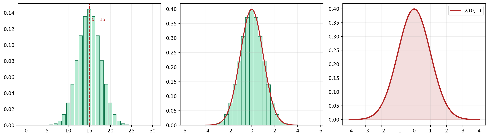
Left: $\text{Bin}(30, 0.5)$. Center: standardized $Z = (X - \mu)/\sigma$ with $\mathcal{N}(0,1)$ overlay. Right: the limiting $\mathcal{N}(0,1)$.
Multivariate Gaussian $\mathcal{N}(\boldsymbol{\mu}, \boldsymbol{\Sigma})$: for $\mathbf{X} \in \mathbb{R}^d$ with mean vector $\boldsymbol{\mu}$ and covariance matrix $\boldsymbol{\Sigma}$. Any linear transformation $\mathbf{A}\mathbf{X} + \mathbf{b} \sim \mathcal{N}(\mathbf{A}\boldsymbol{\mu} + \mathbf{b},\, \mathbf{A}\boldsymbol{\Sigma}\mathbf{A}^\top)$. The OLS estimator is a linear function of Gaussian noise, which is why its sampling distribution is also Gaussian.
We observe data $X_1, \ldots, X_n$ drawn i.i.d. from a distribution with unknown parameter $\theta$. An estimator $\hat{\theta} = g(X_1, \ldots, X_n)$ is a function of the data that approximates $\theta$. The bias is the systematic error: $\text{Bias}(\hat{\theta}) = \mathbb{E}[\hat{\theta}] - \theta$. An estimator is unbiased if $\mathbb{E}[\hat{\theta}] = \theta$. The mean squared error combines both: $$\text{MSE}(\hat{\theta}) = \mathbb{E}[(\hat{\theta} - \theta)^2] = \text{Bias}(\hat{\theta})^2 + \text{Var}(\hat{\theta})$$
A biased estimator with low variance (Ridge regression) can have lower MSE than an unbiased one with high variance (OLS in high dimensions).
Sample mean: $\bar{x} = \frac{1}{n}\sum_{i=1}^{n} x_i$, an unbiased estimator of $\mathbb{E}[X]$.
Sample variance: $s^2 = \frac{1}{n-1}\sum_{i=1}^{n}(x_i - \bar{x})^2$, an unbiased estimator of $\text{Var}(X)$. The $n - 1$ denominator (Bessel's correction) compensates for using $\bar{x}$ instead of the true mean $\mu$; estimating $\mu$ from the same data costs one degree of freedom.
Sample covariance: $\widehat{\text{Cov}}(X, Y) = \frac{1}{n-1}\sum_{i=1}^{n}(x_i - \bar{x})(y_i - \bar{y})$.
Given i.i.d. data $x_1, \ldots, x_n$ from a distribution with density $p(x; \theta)$, the likelihood $L(\theta) = \prod_{i=1}^{n} p(x_i; \theta)$ measures how probable the observed data is under $\theta$. The log-likelihood converts the product to a sum: $$\ell(\theta) = \sum_{i=1}^{n} \log p(x_i; \theta)$$ The MLE is $\hat{\theta}_{\text{MLE}} = \arg\max_\theta\,\ell(\theta)$.
Example: Gaussian mean. Let $x_i \sim \mathcal{N}(\mu, \sigma^2)$ with $\sigma^2$ known: $$\ell(\mu) = -\frac{n}{2}\log(2\pi\sigma^2) - \frac{1}{2\sigma^2}\sum_{i=1}^{n}(x_i - \mu)^2$$ Maximizing over $\mu$ is equivalent to minimizing $\sum_i(x_i - \mu)^2$. Setting $\partial\ell/\partial\mu = 0$ gives $\hat{\mu}_{\text{MLE}} = \bar{x}$. Minimizing squared error and maximizing the Gaussian log-likelihood are the same optimization problem.
Example: Bernoulli. Let $x_i \sim \text{Bernoulli}(\pi)$. Then $\ell(\pi) = \sum_i [x_i\log\pi + (1 - x_i)\log(1 - \pi)]$, and $\hat{\pi}_{\text{MLE}} = \bar{x}$, the sample proportion of 1s. Logistic regression extends this by letting $\pi$ depend on $\mathbf{x}$ through a sigmoid.
Asymptotic properties. Under mild regularity conditions, as $n \to \infty$: the MLE is consistent ($\hat{\theta} \to \theta$ in probability), asymptotically normal ($\sqrt{n}(\hat{\theta} - \theta) \xrightarrow{d} \mathcal{N}(0, \mathcal{I}(\theta)^{-1})$), and efficient (achieves the Cramér–Rao lower bound).
In supervised learning, we are given a training set $D_n = \{(x_i, y_i)\}_{i=1}^n$ drawn i.i.d. from an unknown joint distribution $\nu$ on $\mathcal{X} \times \mathcal{Y}$, and the goal is to find $f : \mathcal{X} \to \mathcal{Y}$ that predicts well on unseen inputs. The nature of $\mathcal{Y}$ determines the problem type:
Fix a loss function $\ell(y, f(x)) \geq 0$ and define the true risk: $\mathcal{R}(f) = \mathbb{E}_{(x,y) \sim \nu}[\ell(y, f(x))]$. Since $\nu$ is unknown, we minimize the empirical risk: $$\hat{\mathcal{R}}_n(f) = \frac{1}{n}\sum_{i=1}^{n}\ell(y_i, f(x_i))$$
Generalization measures how well a model trained on $D_n$ performs on new data. A model that fits training data perfectly but fails on unseen inputs has overfit; a model that cannot fit training data has underfit.
The Bayes optimal predictor $f^* = \arg\min_f \mathcal{R}(f)$ minimizes true risk. Under squared loss, $f^*(x) = \mathbb{E}[y \mid x]$. Its risk is the Bayes risk $\mathcal{R}^* = \mathbb{E}_x[\text{Var}(y \mid x)]$, the irreducible noise floor no predictor can beat. The prediction error decomposes as: $$\boxed{\mathcal{R}(\hat{f}) = \underbrace{\mathcal{R}^*}_{\text{irreducible}} + \underbrace{\text{Bias}^2 + \text{Var}}_{\text{reducible}}}$$
The choice of loss function determines what "good prediction" means, and different losses lead to fundamentally different optimization problems.
$$\ell(y, \hat{y}) = (y - \hat{y})^2$$
The standard loss for regression. Convex and differentiable everywhere, with Bayes optimal predictor $f^*(x) = \mathbb{E}[y \mid x]$. Minimizing squared loss is equivalent to Gaussian MLE. Sensitive to outliers, since large errors are penalized quadratically.
$$\ell_{0\text{-}1}(y, \hat{y}) = \mathbf{1}[\hat{y} \neq y]$$
Counts mistakes. The Bayes classifier under 0-1 loss is $f^*(x) = \arg\max_k P(y = k \mid x)$, but 0-1 loss is non-convex and non-differentiable, making direct minimization NP-hard. Logistic regression and cross-entropy replace it with convex, differentiable surrogates.
For binary classification with $y \in \{0, 1\}$ and a model outputting $\hat{p} = \sigma(\mathbf{x}^\top\boldsymbol{\theta}) \in (0, 1)$ where $\sigma(t) = 1/(1 + e^{-t})$: $$\ell_{\text{logistic}}(y, \hat{p}) = -y\log\hat{p} - (1-y)\log(1 - \hat{p})$$
Maximizing the Bernoulli likelihood equals minimizing this loss. It is convex in $\boldsymbol{\theta}$ and penalizes confident wrong predictions heavily. The multiclass generalization is cross-entropy: $\ell_{\text{CE}}(y, \hat{\mathbf{p}}) = -\log\hat{p}_y$, where $\hat{\mathbf{p}} = \text{softmax}(\mathbf{z})$ with $\text{softmax}(\mathbf{z})_k = e^{z_k}/\sum_j e^{z_j}$.
A loss $\ell$ convex in model parameters $\boldsymbol{\theta}$ guarantees that any local minimum of $\hat{\mathcal{R}}_n$ is a global minimum, so gradient descent converges to the best solution in the hypothesis class. Non-convex losses (0-1 loss, neural network landscapes) can have many local minima.
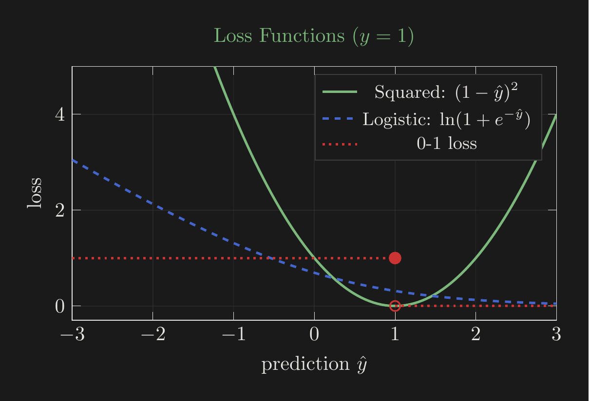
Three losses for true label $y=1$: squared (convex, smooth), logistic (convex, asymptotes to 0), and 0-1 (non-convex, non-differentiable, step at $\hat{y}=1$).
There are two philosophically different approaches to supervised learning. The joint distribution $p(x, y)$ factorizes in two ways: $$p(x, y) = \underbrace{p(y \mid x)}_{\text{discriminative}} \cdot p(x) = \underbrace{p(x \mid y)}_{\text{class-conditional}} \cdot p(y)$$
Discriminative models (linear regression, logistic regression, neural networks) learn the decision boundary directly and tend to perform better with large $n$, since they only model what is needed for prediction. Generative models (Gaussian Discriminant Analysis, Naive Bayes) model the full data-generating process, requiring stronger assumptions but potentially more data-efficient when those assumptions hold.
| Approach | Models | Training objective |
|---|---|---|
| Logistic regression (disc.) | $p(y \mid x)$ directly | $\max \sum_i \log p(y_i \mid x_i; \boldsymbol{\theta})$ |
| Gaussian Discriminant Analysis (gen.) | $p(x \mid y)$ and $p(y)$ | $\max \sum_i \log p(x_i, y_i; \boldsymbol{\theta})$ |